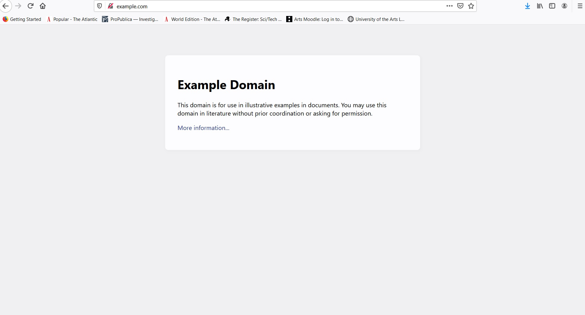
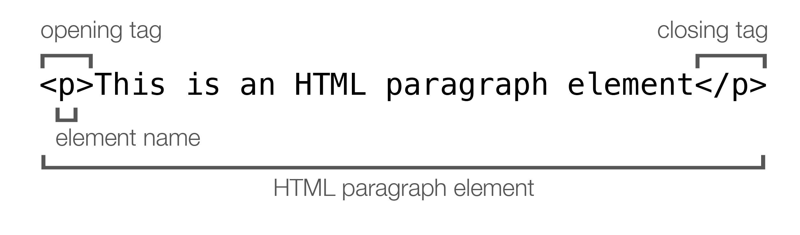
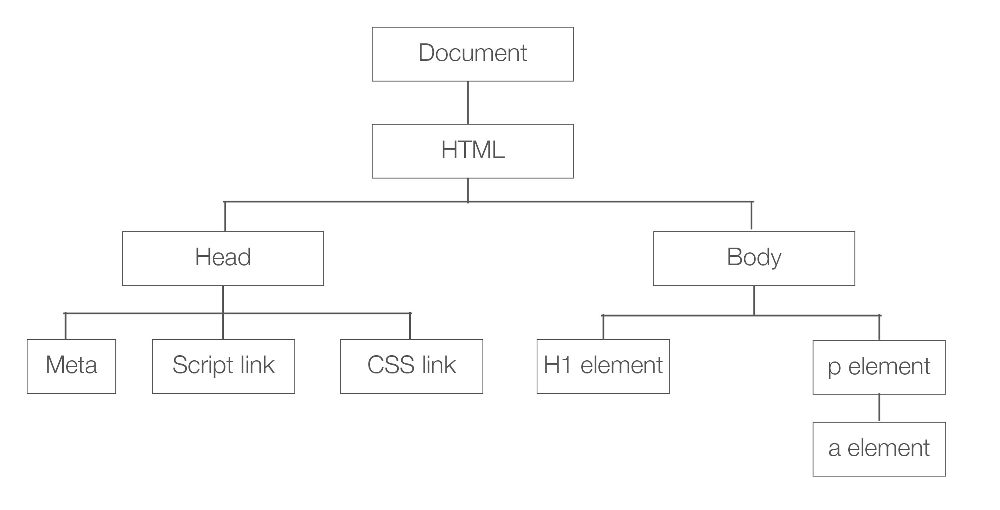
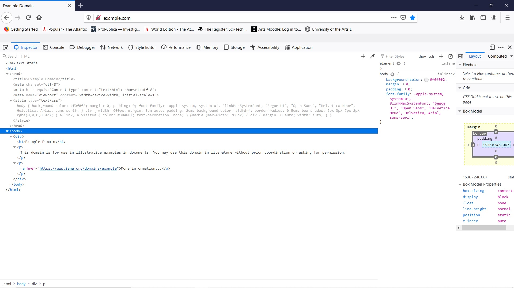

HTML and CSS
Today’s workshop is all about creating web pages, with HTML and CSS. The aim of this workshop is to get you familiar with HTML and CSS, understand what each does and how to write them. T. This video is an introduction to HTML and CSS, there is then a video on getting started with HTML, and another for CSS.
The internet is a network of interconnected computers. The world wide web is a collection of documents and other resources which are accessed with internet protocols. A web browser is one way to access the internet and certain content on it.
There are a number of browsers available, many are based on the open source google project Chromium. These include Google, Microsoft Edge, Opera and Samsung Internet.
W3C which stands for World Wide Web Consortium is the standards organization for the web. Major browser vendors as well as companies such as Adobe and Air B&B are members of W3C. They work to develop standards for the web for example on accessibility, security, SVG’s, audio, VR and AR.
HTML and CSS
HTML and CSS are used to created content for web pages. HTML provides the structure for the content; CSS provides the style.
This is an example of HTML. HTML isn’t a programming language, is a markup language. The acronym stands for Hypertext Markup Language. A markup language is a way to annotate content that is not shown when the content it is displayed. It is instructions for the browser on what to do with the content of the page. HTML is the markup language used by web browsers.
You create an HTML file by using the extension .html when you save a file. By using this extension, the browser will know to expect HTML.

If you look at this site which is example.com
This is the HTML for it. HTML helps the browsers to format the content of the page. HTML gives your page structure, you can define headers, headings, paragraphs images and links. You can create different blocks of content and have consistent styling. It also makes your page more accessible, it helps screen readers to read the page. It also provides the structure so you can style your page using CSS.

HTML elements are normally made up of an opening and closing tag. The opening tag will contain the name of the type of element enclosed by a left and right-angled bracket. The closing tags are similar, but have a forward slash before the element type.
In the opening tag you can also add optional attributes. These attributes could be to give the element an id or class name as an identifier, or the location and information about an image.
DOM

DOM stands for Document Object Model, it is a representation of an HTML. When a browser opens an HTML page it first goes through the HTML, it parses is HTML and creates a tree of the page with the elements as its nodes. It then parses the CSS and combines the relevant CSS to the HTML elements on the DOM.

So if you go to a web site, I’ve gone to example.com, and open the developer tools. On a Mac press command + option + I, on a Windows PC press control + shift + i;
You can see the structure of the HTML, and the DOM is made from this
CSS
CSS stands for cascading style sheets, they are files used to style your web page. With different CSS the same HTML can look very different.
This is a page from a site called css zen garden, people use the same HTML page, and using CSS make it look very different
Here is how someone else styled it
And this is another example, all three have the same HTML, the same content, but have been styled differently with CSS. With CSS you can change so much, including colors, positions and fonts and you can animate content as well.
After the selector you use curly brackets to enclose the declarations, which has a property, in this case color, which changes the color of the font. The property is given a value, in this case the color is a hexadecimal number. The property and value are separated by a semi colon. You can have multiple declarations for a selector.
 All HTML elements have a box around them, the box model, that is processed by the browser. This box will affect how they are displayed on the page. The box consists of the content, padding, a border and a margin.
The image is by Matthias Apsel using the creative commons license CC0 1.0
All HTML elements have a box around them, the box model, that is processed by the browser. This box will affect how they are displayed on the page. The box consists of the content, padding, a border and a margin.
The image is by Matthias Apsel using the creative commons license CC0 1.0